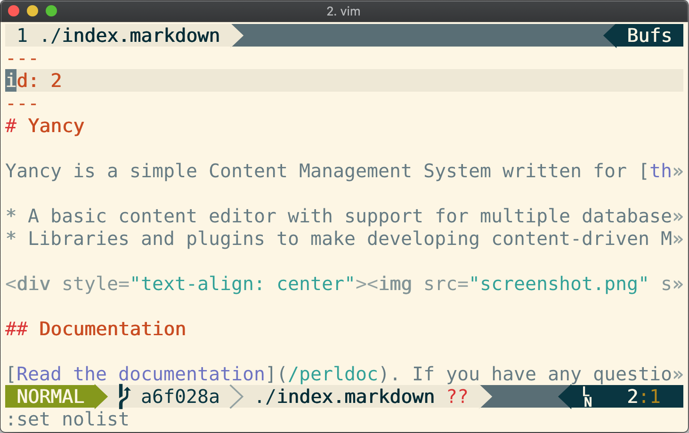
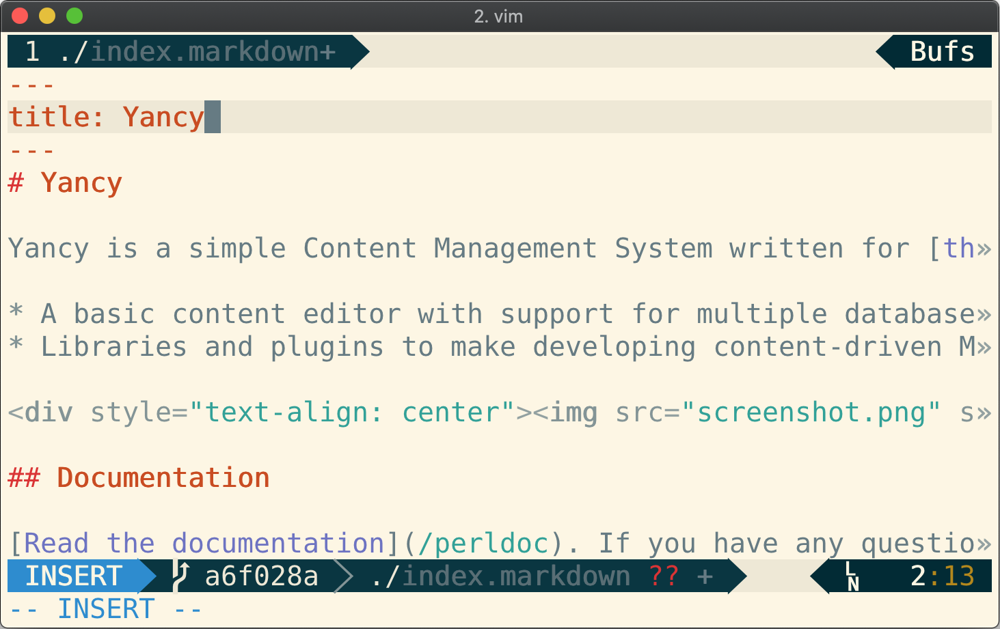
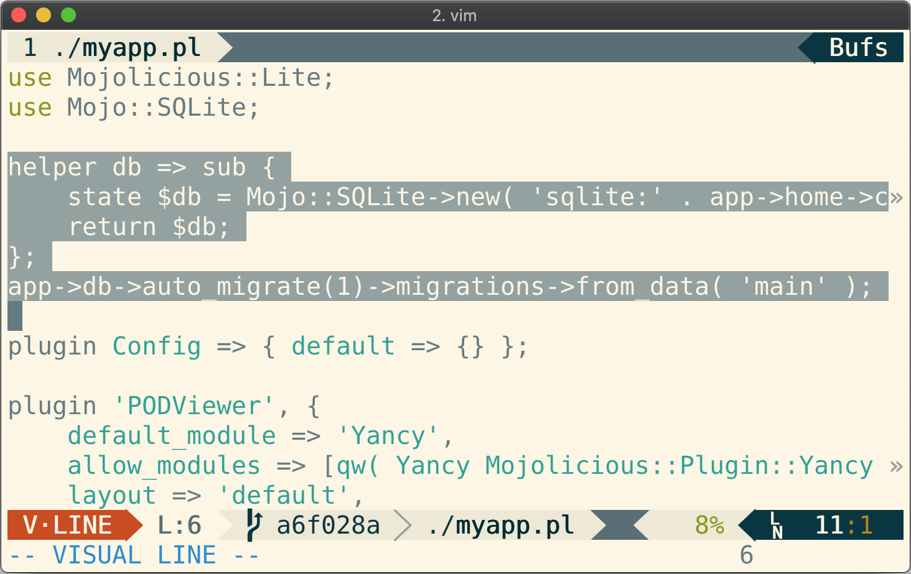
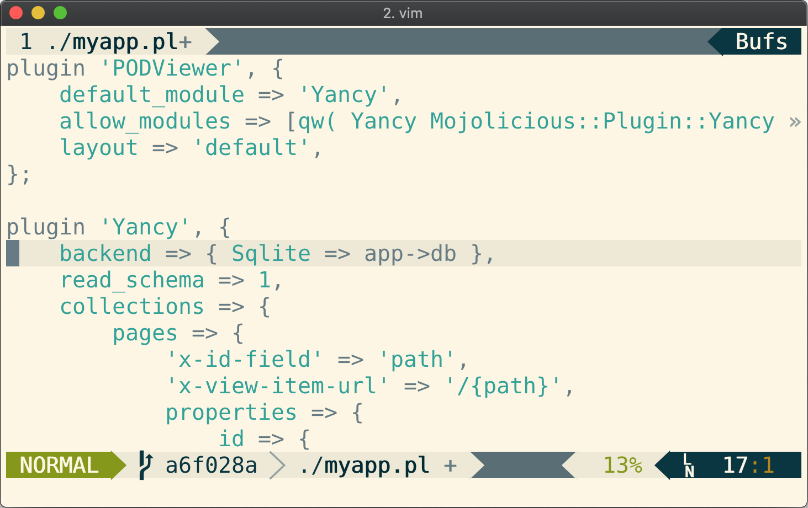
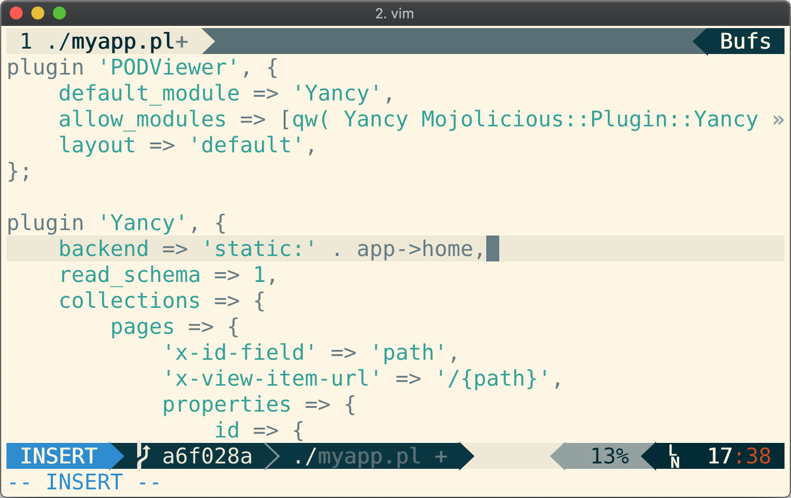
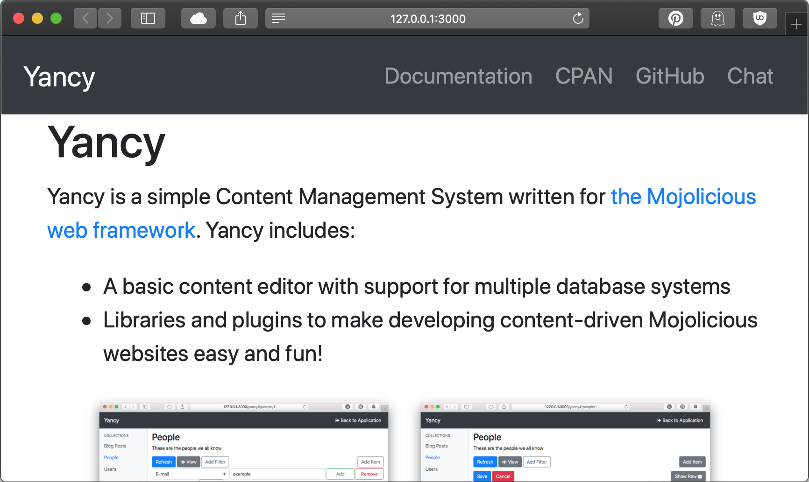
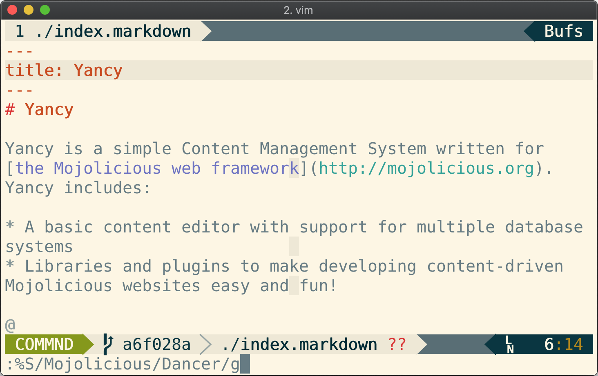
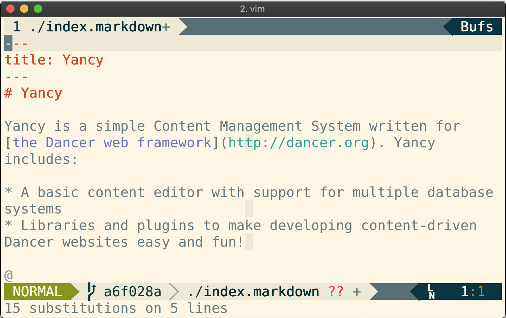
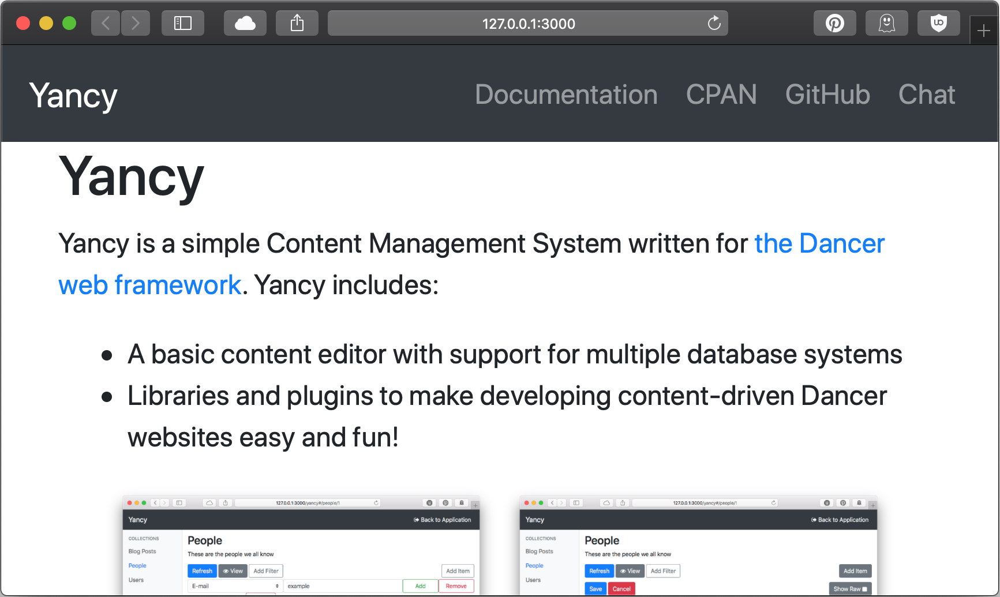

Yancy's Static Backend

Back a few months ago I wrote about making a website for the Yancy
CMS that
included a basic Markdown page editor, adding a documentation viewer
with the Mojolicious PODViewer
plugin, and
deploying a static version of the site using the Mojolicious export
command.
The site uses a SQLite database, which makes it very easy to set up and
use the Yancy editor, but very difficult to work with the data any other
way...
To solve this problem, many people have taken to writing their website as a set of static files and using a static site generator to add templates and plugins to build their website. Each page has a header section that defines some metadata about the page, like the title or the date it was posted. Instead of having each page be a row in a SQLite database, each page in a static site is a file on the filesystem!
Yancy uses "Backends" to interface with a database. To make Yancy into a static site generator, I wrote a backend that works with a flat-file database made up of YAML and Markdown files: Yancy::Backend::Static. I can use this new backend to make my Yancy documentation site even easier to edit!
To start using
Yancy::Backend::Static,
first I need to copy the data in my pages collection from my old
SQLite database using the new Yancy backend copy
command. The
directory I want to use for my Markdown pages is the same as my app, so
I will use static:. as the URL for my new backend.
$ ./myapp.pl backend copy static:. pages
Now I have an index.markdown file in my current directory, but there's
a small problem: The backend copy command copied the old database's ID
field, and did not add a title attribute (since the old schema didn't
have a title field). I can change my index.markdown like this:
 
Then I need to make my app use my new backend. First, I can get rid of the database initialization helper.

Then I can change the backend Yancy uses.
 
Now I can run my site from my new markdown files!
$ ./myapp.pl daemon
[Wed Apr 24 12:44:33 2019] [info] Listening at "http://*:3000"
Server available at http://127.0.0.1:3000

The best part of this is now I can use the morbo development
server and the AutoReload
plugin to
automatically update my browser when my content changes!
# Watch the entire current directory for changes
$ morbo myapp.pl -w .
Then when I change my index.markdown, my browser reloads to see the
new content!
  
The Yancy::Backend::Static
module (combined with
Mojolicious::Plugin::Export)
turns Yancy into a static site generator. I can use Yancy's editor, or
any text editor, to edit the content in my site. This makes it even
easier to rapidly build simple websites!
(P.S.: Despite this new Yancy backend, Statocles, my static site generator, is not going away. It is going to be rebuilt to use Yancy for content management. Statocles will keep its friendly deploy workflow, blog application, themes, and sanity checking. Yancy will just handle the content management. The result should be a faster generator with less code and better ways to add custom content and apps. Stay tuned!)
Original art by Doug Bell, released CC-BY-SA. Book image by 2happy (CC0)

Doug Bell
Doug (preaction) is a long time Perl user. He is the current maintainer of CPAN Testers and the author of many CPAN modules including the Statocles blog engine that powers this site.